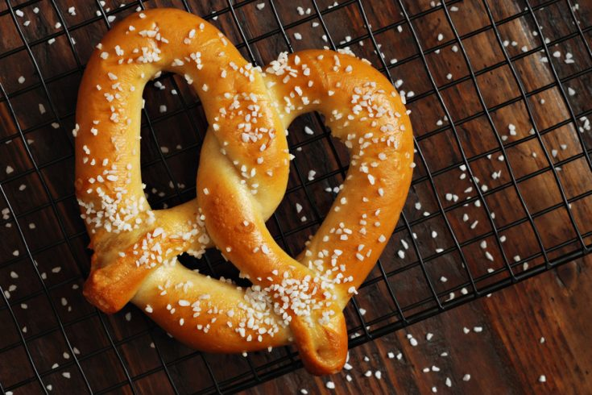

Final Fantasy 14's Dark Pretzel

A delicious and easy recipe from your favourite JRPG
The Dark Pretzel is a traditional Dunesfolk bread twisted into the shape of a knot and sprinkled generously with coarse-ground salt before being baked to a deep brown.
Ingredients
- Sunset wheat flour
- Maple sugar
- Chicken egg
- Table salt
- Smooth butter
- Mineral water
- 2 Fire shards
- 1 Water shard
To Prepare
- In a medium bowl, sprinkle the yeast on top of the warm water, and allow it to sit for 2 minutes. Then, stir in the sugar, salt, and flour. A dough should form.
- Chop the butter into small pieces and add to the dough, stirring to incorporate. Knead the dough for about 5 minutes on a lightly floured surface.
- Form a ball and place in a lightly oiled bowl, cover loosley with plastic wrap, and allow the dough to rise until doubled in size for about an hour.
- Preheat the oven to 450 degrees F, and grease a baking sheet. Remove the dough from the bowl and punch it down. On a floured surface roll out the dough and divide into equal pieces.
- Dissolve the baking soda in the water, and dip each pretzle in the baking soda solution. Arrange the pretzels on the prepared baking sheet. Brush the pretzels with the egg wash and sprinkle with coarse salt. Bake the pretzels for about 10 to 12 minutes or until golden brown.
Return to main page